OurPlaneCore¶
Локальная программа для takeoff по PDF — рабочее место estimator-а: PDF viewer, Pages tree, Takeoffs tree, Estimating, Excel export и AI review в одном окне. Близкий функциональный клон PlanSwift. Здесь — каждая кнопка, ползунок и таб + рабочий процесс от и до, обзор и архитектура.
Статус
Внутренняя программа, не публичный SaaS. Скриншоты ниже redacted: job names, sheet names, real takeoff names — скрыты. Названия кнопок даны как в интерфейсе (англ.), пояснение — рус.; тултипы в программе совпадают с этим.
Новое в программе (обновления мая 2026)
- 3D Roof по-новому — таб
7 3D: per-edge pitch вместо «Auto/Clear Roof». Помечаешь кромки roof base (Select Edge), задаёшь каждой свой pitch,Generate Roofстроит ridge/hip/valley (включая вогнутые valleys), Revit-style envelope для U/S/L-крыш. См. Таб 7 3D. - 3D Massing — AI-черновик здания — отдельная панель:
Build 3D Draft,3D From Takeoffs,AI 3D Sort,Review Roof/Review Openings,Accept 3D. См. 3D Massing. - Новая модель выделения и vertex-grips —
Ctrlмультивыбор,Altрежим вершин, прямое перетаскивание ручек,line cut. См. Редактирование. - Page takeoff layers — порядок (z-order) привязанных takeoff-слоёв на
листе. Job source selector + переделанный
Open Jobдиалог. См. Прочее новое.
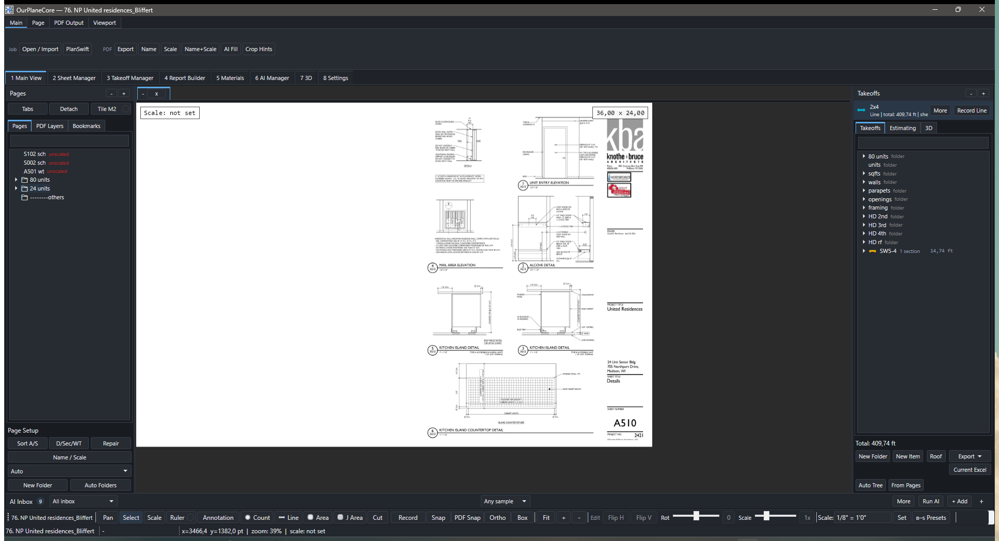
1 Main View: ribbon сверху, Pages-дерево слева, PDF-вьюпорт по центру, Takeoffs-дерево справа, tool strip снизу.Что внутри¶
-
PDF Workspace
Job, sheets, page folders, layers, overlays, scale, sheet legend, display settings, PDF export with measurements.
-
Sheet Manager
Review-gated
Auto Name/Auto Scale/ confidence /Why/ warnings. Применяется только то, что отмечено галкой. -
Takeoff Tools
Count,Line,Area,J Area,Scale,Select,Ruler, markups, copy/paste. -
:material-folder-tree:{ .lg .middle .kb-mk--green } Pages / Takeoffs
Слева sheets/folders, справа takeoff folders/items. Sheet selection подсвечивает takeoff items, и наоборот.
-
Estimating / Manager
Табличный обзор quantities, sections, units, notes, prices. Current-sheet filter, export commands.
-
3D Massing
Reviewable draft: footprint, walls, roof planes из markers/takeoffs. Не BIM, а visual QA для проверки openings/roof shape.
От и до — рабочий процесс¶
- Создать / открыть job. Таб
1 Main View→Open / Import(Ctrl+O) — открыть/создать job или импортировать PDF. Recent — Ctrl+Shift+O. - Импорт PDF.
Open / Import→ добавить PDF (или таб2 Sheet Manager→Import PDF(s)). - Метаданные листов. Таб
2 Sheet Manager:Analyze→Auto Name/Auto Scale/Name+Scale→ проверитьConfidence/Why/Warnings→Apply Checked(применяется только отмеченное). Нет данных в PDF →AI Fill(+Crop Hintsдля зон номера/масштаба). - Разложить листы.
Sort A/S→D/Sec/WT→Auto Folders. При сбитых связях measurements →Repair Links. - Открыть лист. Таб
1 Main View, деревоPagesслева — выбрать sheet. Проверить scale (Scaletool) и слои (PDF Layers). - Создать / выбрать takeoff item. Справа дерево
Takeoffs→New Item(или T). Имя по правилам — Как называть takeoffs. - Рисовать. Выбрать tool (
Count/Line/Area/J Area), включить записьRecord(Space), обвести.Scaleобязателен для Line/Area. - Проверить. Таб
3 Takeoff ManagerилиOpen Estimating— totals, sections, notes;Current-sheet filter— только активный лист. - Экспорт. Таб
3→Export CSV/TXT/Excel, либоCurrent Excel— пишет в уже открытый workbook от активной ячейки (auto-save нет, проверка на пользователе). - AI (опц.).
AI Inboxснизу:+ Addмаркер/кроп →Run AI→ review draft → accept. Quantity появляется только после accept.
Верхние workspace-табы¶
| Таб | Назначение |
|---|---|
1 Main View |
Основное: PDF-вьюпорт, Pages слева, Takeoffs справа, AI Inbox снизу |
2 Sheet Manager |
Импорт/метаданные/раскладка листов, review-gated rename+scale |
3 Takeoff Manager |
Таблица quantities, sections, notes, экспорт |
4 Report Builder |
Сборка report-блоков из TemplateCom.xlsm (в разработке) |
5 Materials |
Извлечение material evidence + Materials Report sheet |
6 AI Manager |
AI-наблюдения, маркер-сеты, обучение, запуск/ретрай |
7 3D |
3D massing: walls/roof build + 3D viewer |
8 Settings |
Редактируемые правила (см. ниже) |
Лента над вьюпортом¶
Таб Main¶
| Кнопка | Действие |
|---|---|
Open / Import |
Открыть job, сменить job-папку, создать job или импортировать PDF |
PlanSwift |
Отдельный конвертер PlanSwift-job |
Export |
Экспорт выбранных/всех листов в PDF |
Name / Scale / Name+Scale |
Превью и применение PDF-имён / масштаба / вместе |
AI Fill |
Очередь GPT-fallback для отсутствующих метаданных |
Crop Hints |
Переиспользуемые кроп-боксы для номера листа и масштаба |
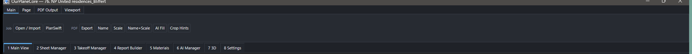
Main + строка workspace-табов под ним.Таб Page¶
| Кнопка | Действие |
|---|---|
Add Pages |
Импорт PDF-страниц в текущий job |
Batch Rename |
Переименовать выбранные страницы по порядку |
Left / Right / 180 |
Повернуть активную страницу |
Level |
Сброс вида к fit + очистка временного ввода |
Batch Rotate |
Повернуть выбранные страницы |
Vertical / Horizontal |
Отразить активную страницу |
Invert |
Инвертировать цвета страницы |
Crop New Page |
Новая страница из видимой области вьюпорта |
Copy |
PNG активной страницы в буфер |
Set Origin / Offset Origin |
Отметить/сдвинуть origin |
Close Page |
Закрыть вкладку страницы |
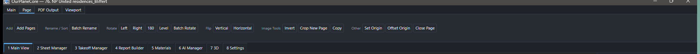
Page: Add Pages, Batch Rename, Rotate, Flip, Invert, Crop, Origin, Close.Таб PDF Output¶
Настройки экспортного рендера PDF (как measurements/markups лягут в файл).
| Контрол | Действие |
|---|---|
Lines & Area ползунки |
Толщина/заливка линий и площадей в экспорте |
Labels |
Какие value-лейблы включать |
Overlays Legend / Header |
Включать легенду / заголовок масштаба |
Include Meas / Markups |
Включать замеры / аннотации в PDF |
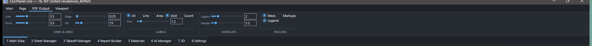
PDF Output: Lines & Area, Labels, Overlays, Include Meas/Markups.Таб Viewport¶
| Контрол | Действие |
|---|---|
All / Line / Area / Joist / Count |
Master + по типам: показ value-лейблов |
w/ page (labels) |
Лейблы масштабируются вместе со страницей |
Legend: Show / Size / Pos / w/page |
Легенда листа: показ, размер, позиция, масштаб |
Scale header: Size / w/page |
Размер заголовка масштаба |
Fast pan/zoom |
Упрощённая навигация (быстрее на тяжёлых PDF) |
ft / sf |
Imperial-единицы |
Viewport background / Page background |
Фон вьюпорта / страницы |
Dark toggle |
Тёмная тема |
Панель инструментов (tool strip)¶
Нижняя строка под вьюпортом — основные инструменты и слайдеры выделения.
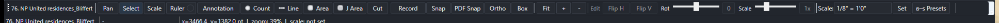
| Кнопка | Tag / клавиша | Действие |
|---|---|---|
Pan |
pan / V |
Панорамирование |
Select |
select / E |
Выбор/редактирование measurements |
Scale |
scale / S |
Задать/проверить масштаб листа |
Ruler |
ruler / R |
Временный замер без takeoff item |
Annotation ▾ (Draw/Arrow/Box/Cloud/Area/Note) |
drawline D / drawrect B … |
Аннотации поверх листа |
Count |
point / P |
Счётный маркер (ea) |
Line |
line / L |
Линейный замер (lf) |
Area |
area / A |
Площадь (sf) |
J Area |
joistarea / J |
Joist-раскладка (count + длина, direction/spacing/pitch) |
Cut |
areacut / X |
Вырез из площади |
Snap / PDF Snap / Ortho / Box |
F3 / Ctrl+F3 / F8 / F9 | Привязки и ограничения |
Fit / + / - |
F / Ctrl++ / Ctrl+- | Вписать / зум |
Flip H / Flip V / 0 / 1x |
— | Отразить / сбросить поворот / сбросить масштаб выделения |
Set (scale) / ▾ Presets |
— | Задать масштаб листа / пресеты |
AI Settings |
— | Модель и статус ключа OpenAI |
Ползунки (sliders)¶
| Ползунок | Диапазон | Что делает |
|---|---|---|
Line thickness |
0.25 – 4.0 |
Толщина линий-замеров |
Point size |
0.25 – 4.0 |
Размер счётных маркеров |
Area edge |
0.25 – 4.0 |
Толщина границы площади |
Area fill |
0 – 100 % |
Прозрачность заливки площади |
Label scale |
0.5 – 3.0 |
Размер value-лейблов |
Rotate selection |
−180 … +180° |
Поворот выделенных measurements; 0 — сброс |
Scale selection |
от 0.25× |
Масштаб выделенных measurements; 1x — сброс |
Рядом с ползунком — поле ввода
У большинства ползунков есть текст-поле: впиши значение и Enter —
точная установка без перетаскивания.
Левая панель — Pages¶
| Контрол | Действие |
|---|---|
Open Tabs / Detach / Tile M2 |
Открыть вкладками / в отдельных окнах / тайлинг на мониторе 2 |
Sort A/S / D/Sec/WT |
A→Arch, S→Struct, trailing -→Others; Details/Sections/Wall-Type |
Repair Links |
Переподключить сохранённые measurements к папкам страниц |
Page Setup |
Параметры страницы (плавающее окно) |
Folder template (Auto/COM/EWP) |
Шаблон папок для sheets |
New Page Folder / Auto Folders |
Создать папку / стандартные папки |
Под-таб PDF Layers |
Load, On, Off, Clear Hi, Layer Trace toggle, Cycle, Apply |
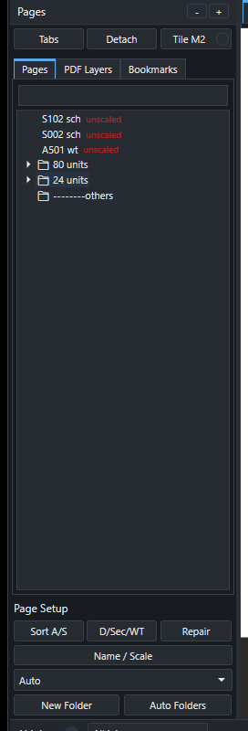
Pages: Tabs/Detach/Tile M2, под-табы Pages/PDF Layers/Bookmarks, дерево листов, Page Setup.Правая панель — Takeoffs¶
| Контрол | Действие |
|---|---|
Record |
Вкл/выкл запись в активный item (Space) |
More / Properties / Find |
Доп. действия / свойства / поиск item |
Sheet Next / Next / Previous |
Навигация по листам и items |
New Folder / New Item |
Создать папку / item |
Roof Base |
Создать roof-base слой |
Export ▾ |
Меню экспорта |
Auto Tree / From Pages |
Стандартное дерево / из структуры страниц |
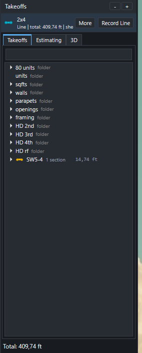
Takeoffs: активный item + Record, под-табы Takeoffs/Estimating/3D, дерево, New Folder/Item, Export.Tools, scale и snap¶
| Tool | Quantity | Когда |
|---|---|---|
Count |
ea |
Windows/doors/posts/beams count, hardware |
Line |
lf |
Walls, plates, blocking, trims, railings |
Area |
sf |
Sheathing, roof/floor area, slab, drywall |
J Area |
joist count + length | Joist layout с direction, spacing, pitch, rounding |
Scale |
page scale | Set/verify до Line/Area |
Ruler |
temp check | Проверить расстояние без takeoff item |
Countможно ставить без scale.Line/Areaтребуют sheet scale — иначе record блокируется.- Scale хранится per page и per measurement; при переносе measurement на другой sheet — пересчитывается.
| Snap | К чему | Когда работает |
|---|---|---|
Snap (F3) |
Endpoints/midpoints/intersections нарисованной геометрии | Всегда |
PDF Snap (Ctrl+F3) |
Vector PDF: corners, line segments, overlay | Только если PDF реально vector |
Ortho (F8) |
90/45° constraint | Line/Area/Scale |
Таб 2 Sheet Manager¶
Нужен, чтобы не применять auto-renaming/scale вслепую.
| Поле / кнопка | Что |
|---|---|
Import PDF(s) / Export PDF / Refresh |
Добавить/выгрузить PDF, перечитать таблицу |
Analyze |
Прочитать текст/слои PDF и показать превью метаданных |
Auto Name / Auto Scale / Name+Scale |
Превью авто-имён / масштаба / вместе |
AI Fill / Crop Hints |
GPT-fallback + кроп-боксы для номера/масштаба |
Proposed Name / Scale / Confidence / Why / Warnings |
Поля превью (что и почему предложено) |
Apply Checked |
Применить только отмеченные строки |
Sort A/S / D/Sec/WT / Auto Folders / Repair Links |
Раскладка и связи |
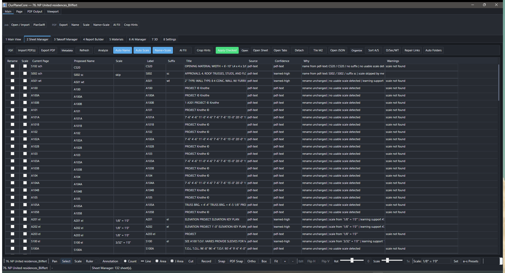
2 Sheet Manager: №, Proposed Name, Scale, Confidence, Why, Warnings + Apply Checked.Таб 3 Takeoff Manager¶
| Кнопка | Действие |
|---|---|
Save (Ctrl+S) / Refresh |
Сохранить job / перечитать таблицу |
Set Active |
Сделать item активной целью рисования |
Properties / Open Estimating |
Свойства / полное окно estimating |
New Folder / New Item / Auto Tree / From Pages |
Структура дерева |
Export CSV / TXT / Excel |
Экспорт quantities |
Current Excel |
Записать выбранное в активную ячейку открытого workbook |
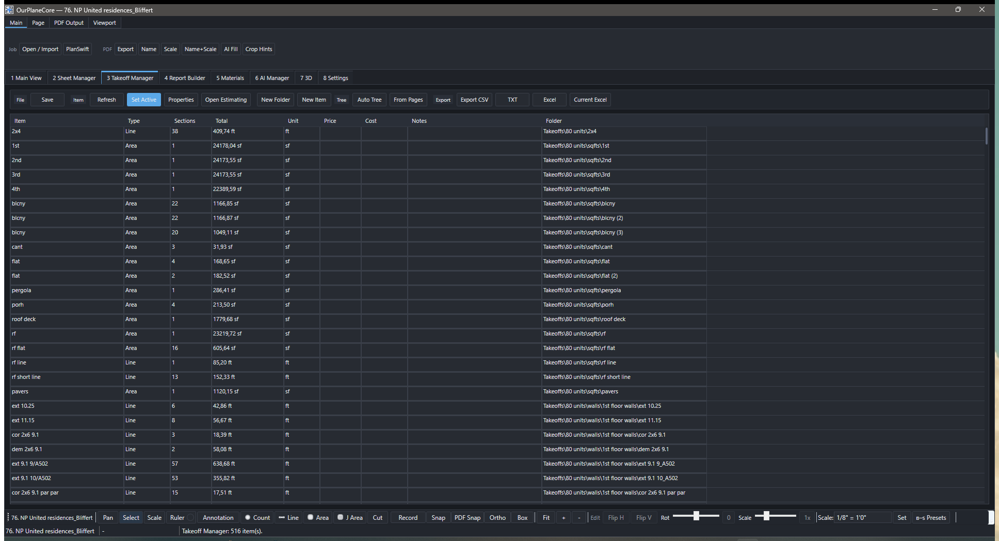
3 Takeoff Manager: Item / Type / Sections / Total / Unit / Notes / Folder + экспорт.- Notes экспортируются — рабочие комментарии не теряются.
- Multi-select поддерживает move/copy/cut/paste/delete.
Current Excel не делает auto-save
Программа пишет строки, проверка и save — на пользователе. Это by design.
Таб 4 Report Builder¶
| Кнопка | Действие |
|---|---|
Reload |
Перезагрузить TemplateCom.xlsm в таблицу |
Refresh |
Обновить вид |
Apply Walls |
Применить A3 wall-block правило к выбранным строкам J:K |
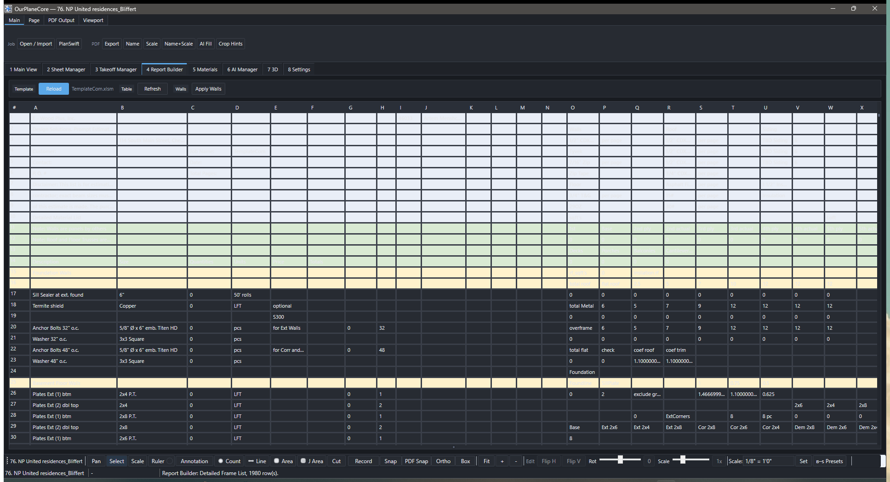
4 Report Builder: сборка report-блоков из TemplateCom.xlsm (в разработке).Таб 5 Materials¶
| Кнопка | Действие |
|---|---|
Extract |
Извлечь material evidence из source-PDF job |
Report Sheet |
Создать копируемый Materials Report sheet |
Refresh / JSON |
Перечитать вывод / полный JSON |
Rows CSV / Summary CSV |
Строки evidence / сводка в CSV |
Folder |
Открыть папку вывода |
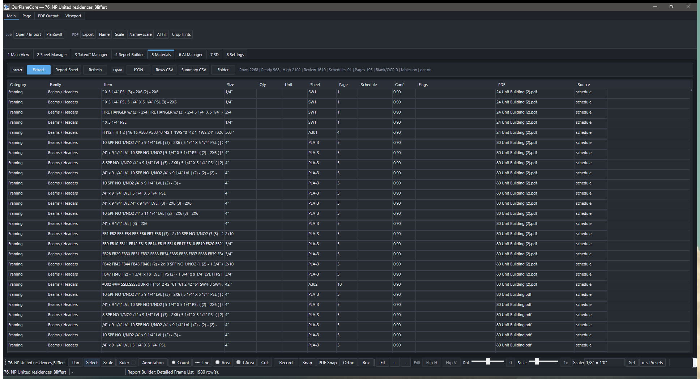
5 Materials: Extract / Report Sheet / JSON / Rows-Summary CSV.Таб 6 AI Manager¶
| Кнопка | Действие |
|---|---|
AI Settings |
Модель и статус ключа |
+ Add / Refresh / Open Details / Go to Page |
Наблюдения, навигация |
Run AI / Run New / Retry Failed |
Запуск AI по выбранному / всем новым / повтор неуспешных |
Create Set / Marker Sets / Export Markers |
Маркер-сеты и экспорт проверенных |
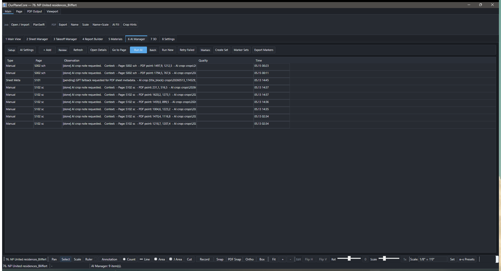
6 AI Manager: наблюдения, Run AI / Run New / Retry Failed, маркер-сеты.Таб 7 3D — per-edge roof¶
| Кнопка | Группа | Действие |
|---|---|---|
Auto |
Build | Авто-постройка walls + sqft slabs + RF/roof areas |
Wall |
Build | Стены-призмы из выбранных line-takeoff |
Roof Base |
Build | Roof footprint из выбранных area-takeoff |
Select Edge |
Build | Выбрать кромки roof base; задать per-edge pitch |
Generate Roof |
Build | Построить ridge/hip/valley из per-edge pitch |
Fit / Iso / Top / Front / Reset |
Viewer | Виды 3D-сцены |
Per-edge roof workflow (Revit-style U/S/L крыши)
Старые Auto Roof / Roof Edges / Clear Roof заменены одним потоком:
Roof Base— footprint из area-takeoff (RF/roof).Select Edge— кликаешь кромки footprint; для каждой помечаешь defines slope и задаёшь свой pitch. Кромка без slope — gable/rake.Generate Roof— солвер строит точный lower-envelope: ridge, hips и valleys (в т.ч. вогнутые), клиппит плоскости по mitered slope-доменам. Результат можно затолкнуть обратно в takeoff-дерево как roof-takeoff.
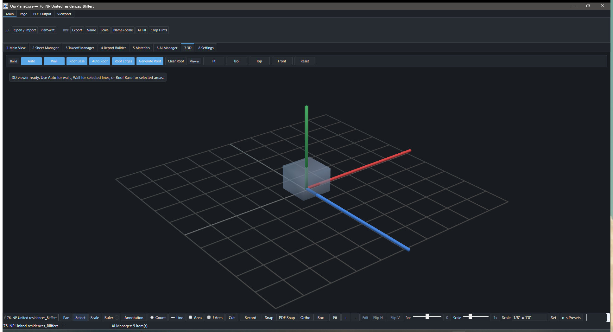
7 3D: Build (Auto / Wall / Roof Base / Select Edge / Generate Roof) + Viewer.3D Massing — AI-черновик здания¶
Отдельная панель (под-таб 3D справа): собирает черновую 3D-модель здания
из AI-маркеров или из takeoff'ов и даёт review-gated workflow до принятия.
| Кнопка | Действие |
|---|---|
Build 3D Draft |
Собрать AI_Context/3d_massing/model.json из AI-маркеров |
3D From Takeoffs |
Черновик из Line/Area замеров (Walls/Areas/Sqft) |
AI 3D Sort |
OpenAI сортирует role/level, затем детерминированно строит черновик |
3D Window |
Отдельное orbit-окно 3D |
Auto Roof |
Очередь reviewable AI-кандидатов roof-маркеров |
Review Roof / Review Openings |
Проверить тип крыши/pitch/guides и проёмы до принятия |
Accept 3D |
Пометить черновик как reviewed project context |
Open JSON / Fit / Iso / Top / Front |
model.json / виды |
Порядок
Build / From Takeoffs / AI 3D Sort → (опц.) Auto Roof → Review
Roof → Review Openings → Accept 3D. Кнопки review/accept активны
только когда есть что ревьюить. Это не BIM — visual QA.
Редактирование: выделение, vertex-grips, line cut¶
Инструмент Select (E), прямое редактирование geometry во вьюпорте.
| Жест | Что делает |
|---|---|
| Клик по объекту | Выбрать один measurement |
| Box (рамка) | Выбрать пересечённые/охваченные measurements |
| Ctrl + клик по новому | Добавить в мульти-выбор |
| Ctrl + клик по выбранному | Выбрать все его вершины |
| Shift + клик/box | Убрать из выбора |
| Alt + клик/box | Режим вершин (handles) |
| Drag ручки | Двигать вершину(ы); Shift — ортогонально |
| Del | Удалить объекты или ручки |
- Direct vertex grips — ручки видны прямо у выбранного measurement; count-маркеры тоже редактируются грипами.
- Line cut — разрез линии на месте (как area
Cut, но для line-замеров). - Cut regions (area) — вырез можно вставлять и за границей Area; paste якорится по верхнему-левому углу.
Прочее новое¶
- Page takeoff layers — z-order привязанных takeoff-слоёв на листе (когда заливки area перекрывают линии).
- Job source selector — видимый переключатель источника job (read-only PlanSwift-источник виден явно).
- Open Job — новый диалог — ribbon-styled XAML; даты в инвариантном английском формате. Recent — Ctrl+Shift+O.
- Per-Monitor DPI v2 — корректный рендер на разных мониторах/масштабах.
Export¶
| Export | Статус | Для чего |
|---|---|---|
| CSV | ✅ | Табличный output: quantities, notes, scale, price |
| TXT | ✅ | PlanSwift-like text blocks |
Excel .xlsx |
✅ | Rows в стиле Name / Value / Unit |
Current Excel |
✅ | Пишет selected rows в уже открытый workbook от active cell |
Report Builder |
🚧 В разработке | Полная сборка report блоков внутри app |
AI safety rules¶
| Правило | Почему |
|---|---|
| AI output — draft, пока user не accept | Чтобы не появились quantities из ниоткуда |
| AI сохраняет request/response JSON | Можно открыть и проверить |
| AI хранит crop evidence | Видно по какому фрагменту drawing предложен result |
| AI создаёт review rows, не quantities | Quantities появляются только после accept |
| AI не показывает secrets | OpenAI key — found/missing, без значения |
Mental model¶
Программа построена вокруг job folder — всё локально, ничего в облаке.
| Слой | Что хранит | Source of truth для |
|---|---|---|
Pages |
Sheets, scale, layers | Sheet name + scale (после review) |
Takeoffs |
Folders, items, sections | Quantity structure |
Measure |
Геометрия в PDF coords | Конкретные числа quantities |
AI |
Crops, requests, drafts | Доказательства (НЕ quantities — пока не accepted) |
Главная логика
Page отвечает за drawing context и scale. Takeoff item — за то, что
считается. Measurement связывает: на каком sheet, с каким scale, в какой
item записана геометрия.
«8 Settings» — редактируемые правила¶
Верхний таб 8 Settings — канонический дом для всех редактируемых шаблонов и правил (поведение-определяющие константы не зашиты в код).
| Категория | Что настраивает |
|---|---|
Page Folders |
шаблон папок для sheets |
Auto Tree / From Pages |
авто-дерево takeoff / генерация из pages |
Sort A/S / Sort D/Sec/WT |
раскладка листов |
Auto Rename / Scale |
правила авто-имени и масштаба |
Defaults |
дефолты |
Каждая категория: live-редактор, Reset to default, Save global default,
Save as this job, Apply. Разрешение правила: job override → global →
default (SettingsPresetStore: global в SmartContextStore/presets/,
per-job в <job>/AI_Context/settings/).
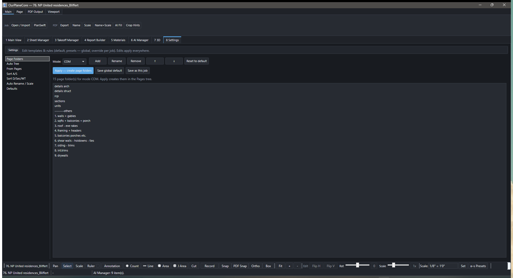
8 Settings: live-редактор правила, Reset / Save global / Save as job / Apply.Архитектура¶
Для понимания, почему программа ведёт себя именно так (не для разработки).
- Стек: WPF desktop,
.NET 9(net9.0-windows),x64. NamespaceOurPlaneCore. - Three-panel shell (
MainWindow+MainWindow.*.cspartials): Pages tree слева, PDF viewport по центру (SkiaSharp-overlay), Takeoffs tree справа, AI Inbox снизу. - PDF-рендер в два слоя: (1) статичная картинка страницы — Python-воркер (PyMuPDF,
pdf_layers_helper.py) с layer-aware рендером; (2) overlay measurements —PdfViewport(SkiaSharp); fallback — Docnet/PDFium. - Геометрия:
Line= сумма отрезков × scale;Area= shoelace по полигону;Count= число маркеров. КаждыйMeasurementхранит свойPageFolder+ scale. - Autosave — debounce 500 мс после изменения measurement.
- Настройки:
%APPDATA%\OurPlaneCore\settings.json; логи —%APPDATA%\OurPlaneCore\logs\app-<yyyyMMdd>.log.
| Слой данных | Модель | Хранит |
|---|---|---|
| Job/pages | OurPlaneCoreJob (+ JobStore) |
дерево job/page/folder |
| Measurement | Measurement |
SKPoint[] в PDF-координатах + per-measure scale |
| Takeoff item | TakeoffItem |
контейнер measurements |
| AI | SmartContextStore / SmartLearningStore |
observations, requests/responses, обучение |
| OpenAI | OpenAiRequestRunner |
HTTP к /v1/responses, ключ из OPENAI_API_KEY |
Disk-модель¶
<job>/
Pages/ PDF sheet folders
Takeoffs/ item folders, measurements.json
sources/ исходные PDF
AI_Context/ observations.jsonl, requests/, responses/, crops/, markers/, settings/
Data.xml per-folder item metadata
Принципы разработки¶
- Local-first — job и context на диске, ничего в облаке.
- Review-gated — automation показывает preview/warnings до apply.
- Evidence-first — AI result имеет crop/source/request/response link.
- PlanSwift-like — workflow привычен estimator-у.
- No hidden magic — если программа не уверена, она говорит почему.
- Manual fallback — ручной takeoff всегда работает, AI его не ломает.
Сборка и обновление¶
dotnet restore .\ourplanecore.sln
dotnet build .\ourplanecore.sln
dotnet run --project .\ourplanecore.csproj
- Без параллельных билдов (lock в
obj\Debug\net9.0-windows). - Release single-file →
C:\Users\User\Desktop\updates\OurPlaneCore\ourplanecore.exe(Desktop-ярлык указывает туда). - «Запустилось ли» проверяют не по окну, а по
%APPDATA%\OurPlaneCore\logs\app-<date>.logот последнейApplication startup.(процесс жив + нетERRORпосле маркера + естьLoaded takeoffs/Viewport).
Горячие клавиши¶
| Клавиша | Действие |
|---|---|
| Ctrl+O / Ctrl+Shift+O | Open Job / Recent |
| Ctrl+S | Save |
| Ctrl+Shift+P | Command Palette |
| Space | Старт/стоп записи в активный item |
| T | Новый takeoff item |
| B K | Add Bookmark (последовательность) |
| V / E / S / R | Pan / Select / Scale / Ruler |
| D / B | Draw Line / Box annotation |
| P / L / A / J / X | Count / Line / Area / J Area / Cut |
| Клавиша | Действие |
|---|---|
| Esc | Отмена draw/edit/Layer Trace/3D guide |
| Enter / Tab | Layer Trace: дальше / цикл режима |
| T | Toggle Layer Trace |
| C | Завершить Line/Area/Cut |
| Backspace | Отменить последнюю точку |
| Del | Удалить выбранное |
| F | Fit page |
| F3 / Ctrl+F3 | Snap / PDF Snap |
| F8 / F9 | Ortho / Box mode |
| Ctrl++ / Ctrl+- | Зум +/− |
| Ctrl+Z | Undo |
| Ctrl+A / Ctrl+C / Ctrl+V | Выбрать всё / копировать / вставить |
| Клавиша | Действие |
|---|---|
| Ctrl+C / Ctrl+X / Ctrl+V / Ctrl+D | Copy / Cut / Paste / Duplicate |
| Ctrl+Up / Ctrl+Down | Двигать узел вверх/вниз |
| Ctrl+Enter | (Takeoffs) выбрать measurements секции на canvas |
| F2 / Del | Rename / Delete |
| 3D Roof: R H V E K P | Ridge / Hip / Valley / Eave / Rake / Pitch guide |
See also¶
- Как называть takeoffs — правила naming + auto-routing
- Workflow · Структура takeoff
- Excel macro hotkeys — VBA shortcuts после export
- Советы и важные вещи